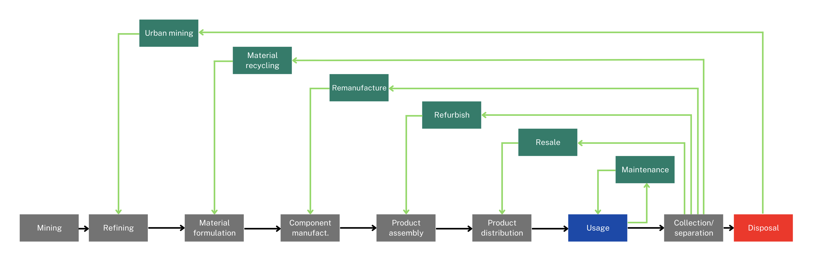
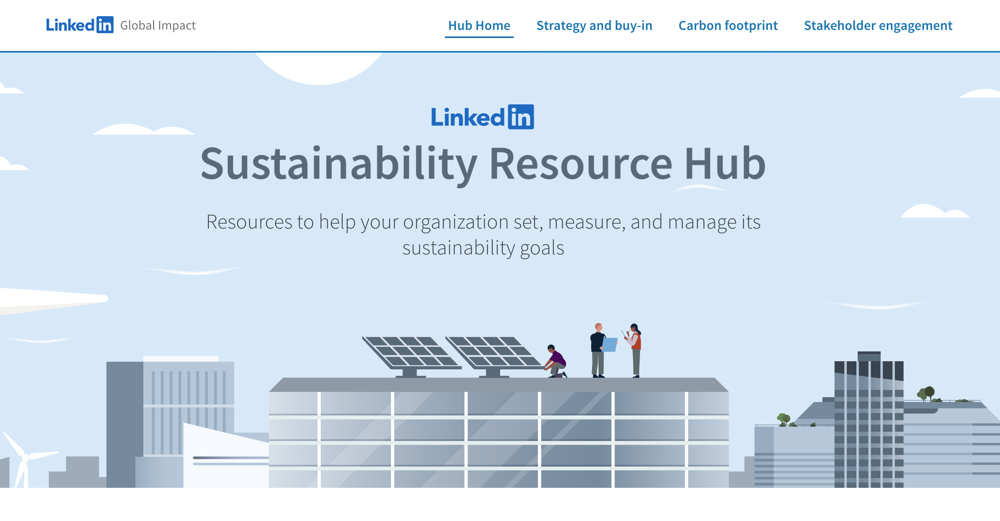

A range of actors can, and in some cases are already, having a role in aligning the UK with the principles of a circular economy
The value chain
“The question of how to overcome…barriers to a circular economy is multifaceted. The role of policy is central on many levels – international, regional, national and city – but other stakeholders play a crucial role as well, the most important being business organizations, science and technology and civil society” (Wijkman, 2021).
“The whole spectrum of stakeholder groups in the UK need to be involved…and make their contribution” (Wiedmann et al. 2006, p. 13).
The way that goods and services are produced, used and disposed of within the global and UK economy is often complex, involving multiple actors and activities frequently spanning different countries. The term ‘value chain’ refers to the full range of activities needed to create a product or service. This includes across stages of extraction, production, processing, manufacture, distribution, retail, use and disposal as well as those typically associated with the circular economy - such as recycling, repair and remanufacturing - where being undertaken (Figure 1).

Figure 1. The CE-Hub value chain taxonomy (Zils, 2023)
Circular systems, whether technical or biological, incorporate a range of activities that reduce demand for material inputs and revalorise, recover or reuse materials already in use (Post, 2016). For example, a technical cycle may involve a car being well maintained and then resold, its components then being reused, and finally constituent materials of parts no longer economically or technically able to be reused, recycled (Post, 2016).
To help understand their potential contribution to aligning the UK economy with CE principles, actors along a value chain can be grouped in the following way (UNECE, 2021) (Fig 2):

Figure 2. The Ecosystem Model (UNECE, 2021)
We describe the ways in which these groups of actors can contribute to a more circular economy across the countries making up the UK below.
Wider business ecosystem stakeholders
Wider business ecosystem stakeholders (ES) such as government bodies, non-governmental organisations and academia can in various ways shape and parameterise the landscape in which value-chain-activities occur.
Over 80% of UK business leaders surveyed in a 2022 poll agreed that government policies are required to bring about the economy-wide changes needed to tackle climate change, as a closely linked issue (CISL, 2022). Regulation is often thought about solely as control by a government furthermore, with the OECD (2021) defining regulation as ’instruments by which governments set requirements on enterprises and citizens’. Given their responsibilities and resources, primary avenues of influence available to central governments across the UK include:
the ability to issue legislative and policy instruments prescribing or prohibiting certain behaviours;
financial and other resources which can be distributed or redistributed to enable activities to be undertaken;
the means to collate and generated information by being in the centre of knowledge networks; and
the capacity to create organisations conducting activities such as public bodies or committees (Steurer, 2013; Duit, 2016).
While the UK Government is the central executive authority of the United Kingdom of Great Britain and Northern Ireland, since the 1990s many areas of law and policy-making relating to waste and resource management have become devolved across the countries making up the UK. This means that central government departments with jurisdictions relating to the circular economy exist not only in the UK Government but too the Scottish Government, Welsh Government and Northern Ireland Executive, though devolution has been asymmetrical in the powers devolved across these bodies.
The structure of local government varies by country in the UK, with N. Ireland, Scotland and Wales having a single level of local government bodies, while in England there is a combination of single-tier authorities in some areas and two-tiers of local government in others (OECD, 2022). Local authorities (LA) across the UK (referred to as local councils in N. Ireland) have statutory responsibility for council services including the collection and treatment of local-authority collected waste (LACW) and street sweepings (Rezaie et al. 2022).
Historically, LAs organised as either individual or combined waste collection and/or disposal authorities have had localised discretion over budgetary allocations for waste management, which materials are collected, how frequently and treatment arrangements (Abbott et al. 2011). The 2021 Environment Bill provides Defra the legal power to mandate improved consistency of recycling collections across LAs in England alongside cost-sharing mechanisms through EPR as part of its major waste reforms, with similar proposals in Scotland and Wales.
In addition to potentially altering council services for which they are responsible to drive a more circular economy, LAs as well as regional bodies and cities can help provide other enabling conditions for a CE transition (Figure 3) (EMF, 2019). This includes through setting ambition and direction (e.g. the West Midlands’ Circular Economy Routemap), community engagement, financial resource allocation, advice and in-kind support (e.g. ReLondon’s Business Transformation programme), planning, the management of public assets and as a purchaser of goods and services.
Reports submitted by signatories to the Circular Cities Declaration show key trends including growing national and supra-national support to cities, the adoption of circular strategies and roadmaps to steer the transition (Abu-Bakar, 2023), investment in infrastructure, using public procurement to achieve objectives, establishing innovation programmes and projects, raising awareness and empowering citizens along with particular focuses on the construction and food sectors (CCD, 2023).

Figure 3. Urban policy levers for circular economy transitions (EMF, 2019)
Through growth in opportunities for participation in the policy-making process (Bäckstrand, 2005) and outside of it, civil society actors have acquired greater status in the landscape of environmental regulation (OECD, 2022). ‘Civil society’ broadly refers to stakeholders (interacting as) neither the government nor market and which includes the general public and those organised. Citizens in the liberal democracy of the UK can influence outcomes through participation in the voting and wider political process. Organised, non-governmental organisations (NGOs) perform a variety of regulatory and steering functions that include:
Inputting to agenda-setting and policy formulation via government facilitated routes of engagement such as consultations and too outside of these;
Collecting, analysing and disseminating information e.g. to monitor compliance;
Coordinating with other actors e.g. the Circular Economy Task Force convened by the Green Alliance which sought to broker greater collaboration within sectors, improve product design and company reporting (Oswald et al. 2018; BITC, 2023);
Pressurising firms and the government (such as through organising boycotts or legal routes e.g. client earth) and whistle-blowing; and
Developing localised schemes (Maitre-Ekern and Dalhammar, 2019).
In addition, NGO influence has increasingly taken new forms such as establishing unilateral partnerships with firms and creating, promulgating and monitoring formalised standards e.g. the EMF’s ‘Circulytics’ monitoring system (Steurer, 2013). In many cases, this has arisen through the need to fill regulatory gaps emerging e.g. at the international level, such as the Forest Stewardship Council - a multi-stakeholder voluntary third-party mechanism covering global wood production chains (Klooster, 2010). Particularly prominent NGOs in this area include those more closely tied to government bodies in the UK such as Wrap and Zero Waste Scotland as well as the Ellen MacArthur Foundation, Circle Economy, the Green Alliance and Business in the Community. Philanthropic groups which blur the line between public and private can too be active.
Several intergovernmental bodies have taken key positions in facilitating countries to tackle environmental pressures from human activities. For instance, the United Nations’ (UN) environmental programme (UNEP) has played a role in coordinating international scientific advisory bodies such as the IPCC, organising international conferences, and establishing international frameworks for climate change mitigation and adaptation, desertification and biodiversity. UNEP also has an important role in brokering information (e.g. the Global Material Flows database) and wider thought leadership.
A particular active supranational body in the area of CE is the World Economic Forum (WEF), with programmes developed including the Platform for Accelerating the Circular Economy (PACE) that works to develop commitments towards the circular economy via a range of value-chain partnerships (Circle Economy, 2022). Other international bodies such as the World Bank are increasingly active in this area through the production of reports and other outputs (WB, 2022). Many other international agencies and organisations covering finance, shipping, energy and food production have the potential to contribute to more circular and sustainable practices via their own routes of influence. At a regional level, the UNECE is leading on many circular economy issues such as relating to data and value chain mapping.
Academic researchers and research programmes contribute to, among other things, the ability to evaluate and evidence the benefits, costs and risks of different CE options, including at the direct request of government policy-makers. Examples of such organisations include the UKRI NICER Programme and Circ-NSR project.
Extended enterprises
An extended enterprise (EN) of organisations such as auditors and standardisation bodies, testing labs, insurance firms and technology providers who through their activities support, administer and enable value chains to operate and function.
Standardisation bodies help unify terminology and play an important role in providing frameworks and guidance to support, among other things, consistent testing, measurement, inspection and validation assessments, uptake of relevant product requirements and information provision as part of environmental management standards. This can support the circular economy through more efficient exchange of information between market actors by removing ambiguity in terms used, building trust in safety and reliability and reducing risk e.g. for batteries (DIN; ISO; CEN CENELEC).
An example of a key standardisation body is the British Standards Institution (BSI) who have been active in developing standards in the circular economy space for almost a decade e.g. its voluntary ‘Framework for implementing the principles of the circular economy in organisations’. BSI standards are typically broad in nature (covering e.g. principles and terminology) and for use by technical committees or actors when producing their own horizontal, generic or product-specific standards. Examples of BSI standards relevant to the circular economy include:
BS EN 45552:2020 - General method for the assessment of the durability of energy-related products;
BS EN 45555:2019 - General methods for assessing the recyclability and recoverability of energy-related products; and
BS EN IEC 62474:2019 - Material declaration for products of and for the electrotechnical industry.
The widely used ISO family of industry-based environmental management standards have also been extended to include circular economy guidance such as:
This also reflects ISO’s commitment to climate action as set out in its 2021 London Declaration. ISO and BSI standards are voluntarily adopted, maintained by private organisations but accepted by public actors which adds to their perceived legitimacy (Falkner, 2003). ISO certificates have been found to be largely concentrated in higher-income countries (To and Lee, 2014).
Technology providers may work to fill new markets generated by government regulation or proactively offer a technology solution to core market actors and those throughout the business ecosystem. This can be in anticipation of future government regulation or not. Examples of relevant technology providers include those working in the area of data such as SAP and Topolytics, who offer products to support improved material tracing and internal accounting.

There exist potential financial risks associated with poor environmental performance for firms using equity financing, commercial financing or income generation through the sale of bonds as investor cost of capital may increase for firms perceived as irresponsible. This risk may have grown in recent years in a context of third sector organisations encouraging shareholder action and fiduciary duty dynamics become of wider importance. Public equity, private market funds and wider debt and equity instruments can enable the development of CE activities (Mahönën, 2019). Investor action on the circular economy is relatively nascent, but as with climate considerations, may be expected to come in the form of commitments and policies or the uptake of metrics and ESG criteria (UN PRI, 2022). Central banks and wider financial supervisory bodies from international to national scales can contribute to aligning the financial sector with societal objectives given their uniquely close links to capital markets (Couto, 2023).
Other relevant actors in the extended enterprise network include certification bodies, ratings agencies and wider service suppliers including in the insurance sector (Swiss Re, 2023).
Core market actors
Core market (CM) actors such as raw material providers, manufacturers and recyclers on the one hand, and consumers on the other - bound together through the production, processing and use of goods and services along a given value chain.
Self regulation can take place at the level of single firms or entire industries. Examples at the firm level include applying ESG Criteria, strategies or demands between firms for certain practices. An examples at the industry level is the Sustainable Forestry Initiative. There are a range of motivations internal to firms which might encourage improved environmental performance in the absence of overt government regulation (Porter and van der Linde, 1995; Ambec and Lanoie, 2008):
Reducing resource and waste-related production costs and minimising future liabilities/supply chain risks;
Differentiation advantages through business model development and entry into new markets;
Building corporate imagery and brand integrity;
Navigating conditions on access to inputs such as capital or the sale of outputs linked to purchaser expectations;
Helping manage supply or demand-side risks;
Factors around organisational culture and normative drivers.
Shifts in business models can be thought about as being: 1) philanthropic; 2) integrative (though incorporating more responsible behaviours into current practices); or 3) innovative (though the development of new business models to solve issues) (Halme and Laurila, 2008).
Examples of resource-efficient business models are set out below (Wrap, 2016).
| Service systems |
Providing a service based upon delivering performance outputs that are linked to products or services. Products could also be designed for disassembly, re-manufacture and re-use. |
| Hire and leasing |
Long-term hire and leasing of products can deliver a longer term approach to product durability, with longer service life, lower maintenance load and lower use of materials and CO2. |
| Incentivised returns and re-use |
Encourages customers to return used items for an agreed value. Customers gain value for unwanted items and return products via a convenient system. Collected products are refurbished and sold for re-use on appropriate markets. |
| Long life |
Products are designed to have a long life time with durability, reducing consumption. |
Retailers act as the interface between producers and consumers, influencing demand for goods and services and how they are delivered. Retailers are therefore subject to a range of pressures to drive change, with growing environmental awareness, stakeholder pressures and government rules and regulations reportedly encouraging UK retailers to embrace circular business models in their operations (Upadhyay, Kumar & Akter, 2021). They can also influence post-consumption phases through the adoption and promotion of business models other than a traditional sales-ownership transaction. Various forms of pre-competitive collaboration can be seen among these actors such as the ‘Retailer Net-Zero Collaborative Action Plan’ to align carbon accounting approaches facilitated by Wrap and WWF (George, 2023).
In addition to influencing value-chain activities as citizens through advocacy or reputation shaming, households can also drive change through their consumption behaviours (Newell, 2008). For instance, consumers may: move patronage to a retailer who offers refillable solutions; purchase second-hand or remanufactured goods; or buy products less often and seek out repair opportunities for currently held goods instead. The responsiveness of consumers is a key determinant of the effectiveness of interventions such as mandatory information disclosure via labelling. Beneficial household behaviour change can be categorised into:
Avoid unecessary consumption or impactful behaviour e.g. reducing food waste;
Shift consumption activities to less environmentally impactful alternatives e.g. sharing instead of buying new; and
Improve environmental performance of activity in question e.g. using BEVs instead of ICEs.
Waste management companies are a key group who manage and coordinate the collection, processing and disposal of products and materials from different economic sectors and households, frequently on behalf of LAs. They do so as private entities ranging from small-medium enterprises (SMEs) to multinational corporations, for whom the need to generate profit including via markets for secondary materials, drives investment and interest in public and private sector contracts.
Recycling, waste and wastewater activities generated a gross value added (GVA) of £16 billion in the UK in 2019 and were associated with 158,000 FTE job roles (ONS, 2022). Data on the flows of wastes as held by many of these companies form a key building block for understanding the quantity, quality, spatial distribution and disposal pathways for products and materials of interest.
Regulatory modes and functions
Regulatory modes can be understood as ‘bundles of rules guiding interactions based on general principles about how actors are best motivated’ (Evans, 2012, p.34) or expected and resourced to behave (Steurer, 2013) and which are often split at a high-level into (Williamson, 1975; Kooiman, 1993):
Involving a pyramid of control with stakeholders bound by a central authority as with traditional government. Instruments including the exercise of formal laws and regulations.
Autonomous stakeholders bound together as producers and consumers, communicating via prices, enabled by institutions such as property rights and with actors free to enter or exit transactions.
Autonomous stakeholders voluntarily coming together to achieve common goals through negotiation and connections
Actors across the groups outlined can contribute to more circular ways of doing things in the UK through these regulatory modes to varying extents as parameterised by their role in value chains, responsibilities, motivations and resources.
Government holds a prominent role through its ability to issue laws, distribute and redistribute resources and set direction (Steurer, 2013; Duit, 2016). The past several decades have seen a growth in market-driven approaches in part to fill regulatory gaps arising through increased trade interdependencies. Some action and responsiveness by consumers and influence of organised and non-organised citizens to environmental objectives (including those directly congruent to the circular economy principles) can be seen. Various forms of ‘co-regulation’ have also emerged i.e. when actors from different societal domains seek to achieve objectives jointly e.g. partnerships between NGOs and industry groups. An example is the industry-led, UN-convened, Net-Zero Banking Alliance.
| Government |
X |
X |
X |
| Market actors |
|
X |
X |
| Civil society |
|
X |
X |
While network forms of regulation benefit from being flexible and responsive to emerging needs they can be susceptible to break-ups due to their voluntary nature. Non-state market-driven forms of regulation that can take place at the level of individual firms or industries such as the use of codes of conducts, customer charters, standards, accreditation or offsets, can be limited in their effect by being contigent on economic rationales and market conditions.
Government actors therefore hold unique resources in the regulatory landscape, including through the ability to regulate via hierarchical, market and network modes. They are also being subject to public democratic oversight and accountability (Abbott, 2012). These functions are difficult, if not impossible, to replicate by other actors in many cases (Duit, 2018). At the same time and acknowledging some of the limitations of hierarchical-only approaches such as long lead times, government simultaneously enabling other forms of effective regulation where being undertaken by other actors and equipping quasi-regulators, can help more effectively drive the delivery of a more circular UK economy.
Back to top